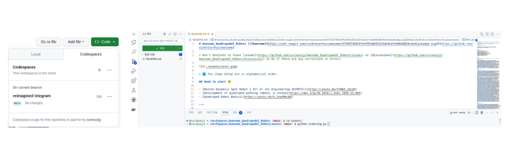
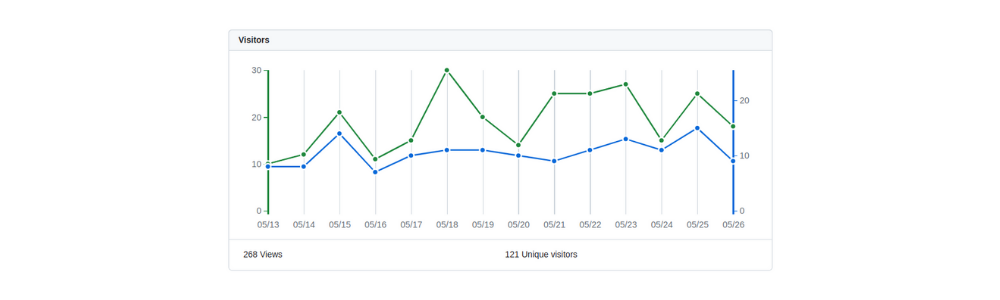
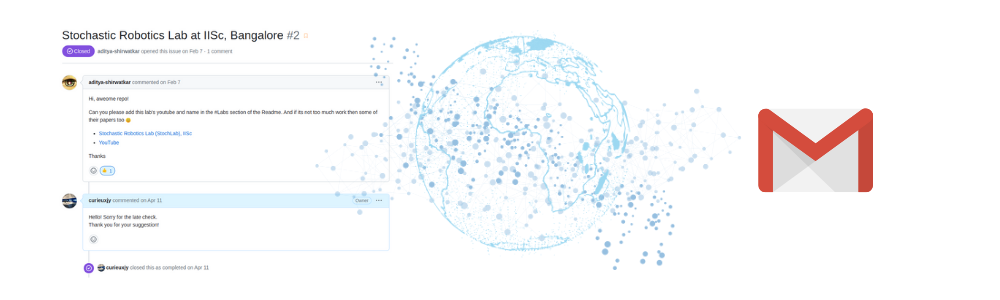

📘Github Starstruck 128

2023.05.27 또 하나의 작은 성공을 기록하게 된 날이 되었습니다.
사실 5월달이 들어서면서부터 이 날을 기록할 수 있기를 바라며 로그를 체크하고 있었는데 드디어 새벽 1시 11분에 달성이 되었다고 로그가 떠서 반가운 마음에 이야기를 남기기 위해 블로그 글을 쓰게 되었습니다.
Starstruck

그 작은 성공은 바로 제가 만든 Github Repository에 StarStruck 128 badge를 받는 것이었습니다. StarStruck은 Github에 Public으로 만든 Repository들 중에 Community로부터 Star를 많이 받으면 주어지는 Badge입니다. 16, 128, 512, 4096 … 개 순으로 badge의 단계가 올라가게 되는데 이번에 128개를 달성하여 Starstruck X2을 받을 수 있었습니다. 전설의 리눅스 개발자 torvalds의 linux repository처럼 4096개는 바라지도 않았고, 128개까지만 달성한다면 10만(16개), 100만(128개) 유튜버 정도의 달성이지 않을까 라고 생각하며 세운 목표였습니다.
{kind=link}

처음에 StarstruckX1 뱃지를 받은 건 2022.07.26이었고 당시에 star 수에 대한 욕심은 전혀 없었는데 16개의 star를 받고 뱃지까지 받은게 신기해서 Facebook에 기념 포스팅을 했었기에 날짜가 정확합니다. 그때는 이후의 뱃지 달성 목표를 생각하기 보다, Facebook에서 잊을만 하면 ~년전 추억이라고 상기시켜주는 서비스를 통해 그때 내가 나름 열심히 공부를 했었지..라고 회상하기 위해 포스팅을 했던 거였습니다. 그 이후로 꾸준히 새로운 paper나 관련 정보들을 모아오다 보니 약 1년 후 StarstruckX2를 받게 되었습니다.
About the Repo

그래서 제게 StarstruckX2의 영광을 안겨준 Awesome_Quadrupedal_Robots 는 Awesome ~으로 만드는 큐레이션 리스트 레포 형식을 본따서 4족 보행 로봇에 관한 정보들을 모은 레포입니다. 큰 카테고리로는 4족 보행 로봇과 관련된 (Robot)Platform, Papers, Github, Youtube, Lab 이 있고, 처음 4족 보행 로봇을 알아가는데 어려움을 겪었던 저의 경험을 떠올리며 Good to start라는 Introduction과 같은 파트를 추가하여 처음 살펴보면 좋을 영상과 페이퍼를 올려 놓았습니다.
레포의 내용의 비율을 보면 아시겠지만 사실 연구자로써 Paper만 모을려고 시작했기 때문에 Paper의 내용이 방대합니다. 그래서 paper는 년도별로 정리를 했고 다른 섹션들 같은 경우에는 특별한 구분이 없이 알파벳 순으로 정리했습니다.(asset/ordering.py코드로 자동 알파벳 정렬) 처음에는 논문의 키워드들도 해시테그처럼 붙여서 내용을 좀 더 효율적으로 살펴볼 수 있게끔 만들면 좋지 않을까 생각했었지만 품이 많이 들기도 하고 나름 연구자들이 고심해서 쓴 제목에 중요 키워드들을 파악할 수 있기 때문에 [제목](링크) 로 논문들을 정리했습니다.
Motivation
잠깐 이야기가 나왔던 왜 이 repo를 만들게 되었는지에 대해 이야기해보려고 합니다. Github에서는 커밋 히스토리를 추적할 수 있으니까 이 레포를 처음 만들 당시로 돌아가서 first commit을 봤습니다. 사실 저는 막연하게 제가 대학원 과정을 시작하며 만들었겠거니..라고 예상하고 있었는데 그 보다 더 일찍, 그러니까 좀 더 정확하게 말하자면 대학교 4학년 막학기 10월에 만든 것이라는 것을 확인할 수 있었습니다.

제 기억이 맞다면 당시에 졸업작품과 졸업 이후의 진로 고민으로 인해 이런저런 고민을 많이 하는 시기였는데 아마 이때쯤 진학할 대학원들을 알아보고 해당 레포를 만들면서 만약에 내가 로보틱스를 공부한다면 어떤 것을 알아야 하는지 정리해보기 위해 만든 것 같습니다. 그때만 하더라도 4족 보행 로봇이라는 정확한 로봇의 종류에 대해 결정되지 않았기에 더 폭넓게 Robotics라고 정하고 시작했던 것 같습니다.
대학원을 진학한 이후, 알아야 할 것들은 너무 많고 여러 연구실에서 쏟아지는 논문들을 감당할 수 없어서 정리를 해야겠다 생각했습니다. 처음에는 아무도 관심없지만 괜히 공개되는 인터셋 상에 올리는 것은 부담스러워서 개인적으로 기록하는 곳(notion이나 privite repo)에 모았지만, 지금까지 저도 다른 사람들이 정리한 리스트들과 인사이트들을 통해 많이 성장할 수 있었고 나도 아직 많이 부족하지만 기여하는 부분이 있으면 좋겠다는 생각에 공개 repo로 전환하여 모으기 시작했습니다. 공개된 리스트라고 생각하니 좀 더 신경을 쓰게 되고 좋은 자극 효과가 되서 내가 기록한 내용을 한번 더 보게되고 그런 경험들이 쌓여 인사이트도 성장하게 되어서 결과적으로 제 스스로에게 더 도움이 많이 되었던 것 같습니다.
How to write
제가 어떻게 해당 repo를 관리하고 작성해오고 있는지 몇가지 팁들을 공유해보려고 합니다.
Source
큐레이션이나 어떤 도움이 되는 정보를 리스트화 한다는 것은 많은 소스들이 우선 전제가 되어야 합니다. 관련 분야 연구자로써 같이 연구하는 동료들과 선후배로부터 얻는 정보들도 물론 많습니다. 하지만 이렇게 privite group에서 얻는 정보들 이외에도 제가 source들을 얻는 주요 경로들은 아래와 같습니다.
- Google Scholar에서 해당 분야에서 활발하게 연구 성과를 내고 있는 연구자들을 follow합니다. 이메일로 해당 연구자가 paper를 내거나 citation되면 알람이 오는데 저는 빠르게 알람온 리스트들을 abstract/result를 살펴보고 공유하기에 좋다고 판단되면 리스팅합니다.
- Youtube 채널 구독을 통해 얻게 되는 정보들도 많습니다. 생각보다 아카이브에 페이퍼를 먼저 올리기 보다 결과 영상이나 설명 영상들을 유튜브에 먼저 올려서 소식을 먼저 알리는 곳들이 많습니다. 제가 repo 카테고리에 youtube 채널을 넣은 이유이기도 합니다.
- Github도 연구자들이 코드를 올리면서 README에 연구에 대한 설명과 함께 공개합니다. 유튜브와 같은 맥락으로 페이퍼보다 먼저 공개하는 경우들도 많고 오히려 코드를 공개해주다보니 연구를 더 쉽고 빠르게 파악할 수 있을 때도 있습니다. 그래서 관련 연구자들을 follow해서 어떤 커밋을 올리고 있는지, 어떤 레포들을 관심있게 보는지(star/cloning)도 알게 되고 Github organization으로 연구실이나 회사 단위로 활동하는 것을 파악하여 정보를 얻을 때도 있습니다.
Editor
markdown을 작성하는게 복잡한 소스코드도 아니기 때문에 git clone/commit 하는게 어려운 일은 아니지만, awesome list를 작성하기 위해 매번 다른 컴퓨터에서 clone하고 커밋하며 싱크를 맞추는 일이 생각보다 귀찮습니다. 그래서 저는 awesome list를 작성할 때는 온라인으로 특별한 editor 없이 바로 작성하고 정렬도 할 수 있는 github Code space를 사용합니다. README.md 리스트 알파벳순 자동 정렬을 python code(asset/ordering.py)로 하기 때문에 python이 설치되어있지 않은 컴퓨터에서는 정렬이 어려운데 Code space를 사용하면 python이 설치되어 있지 않은 인터넷이 되는 모든 컴퓨터에서 작성할 수 있으니 everywhere, anytime이 가능하고 UI는 VS Code와 같기 때문에 어렵지도 않습니다. 커밋도 바로 하구요!

Interactions
공개 repo로 awesome list를 작성하면서 다른 사람들이 본다는 걱정도 있었지만 그래도 공유의 가치와 나보다 다른 시각을 가진, 나보다 잘 아는 유저들의 도움을 받으면서 repo의 가치를 높일 수도 있겠다는 생각도 있었습니다. 그래서 제 repo를 기반으로 interation이 많이 있었으면 좋겠다고 생각했었습니다. 초반에는 내용도 많이 부실하고 노출도 많이 안된 repo이기에 visitor들이 많이 있지 않았지만, 128 star 달성을 기점으로 1주일 동안 visitor log를 보니 그래도 10~30 정도의 방문자들이 있는 걸보니 뿌듯합니다.

소통 창구로 Github에 있는 Issue 와 Discussion을 다른 분들이 많이 이용해주길 바랐지만 전혀 반응이 없길래 조금 아쉬웠습니다. README.md 앞머리에 Don't hesitate to leave issues or discussions to me if there are any corrections or errors. 라고 안내문구를 적었지만 대부분 fork나 watching을 하실 뿐 적극적인 참여와 코멘트는 받아보기 어려웠습니다.

하지만 가뭄에 단비처럼 어느날 레포에 연구실 정보를 하나 추가해줬으면 좋겠다는 Issue를 받은 날도 있었습니다. 처음으로 세계 어딘가에서 내 repo를 보고 반응을 해줬다는 사실이 신기하기도 하고 재밌었고 그때의 느낌을 조금 과장해서 표현해보자면, 마치 우주 은하계에 어딘가에서 지구로 시그널을 보내준 걸 받은 느낌이었습니다. 그리고 어느날은 국내의 어떤 학생으로부터 repo를 보고 이메일로 연락이 온적이 있었습니다. 저도 아직 한참 배우는 학생이기에 학생에게 조언을 할 정도는 아니었지만, 경험을 공유하는 한 연구자로써 한 때는 저도 많이 헤맸던 부분을 공유할 수 있을 것 같아 짧지만 답변을 해드렸습니다.
Impression
우선, 그 무엇보다 뿌듯함이 이 이야기 끝에 남은 소감이지 않을까 싶습니다. 주변 사람들이나 지인들에게 필요한 경우가 아니라면 굳이 제 repo를 잘 소개를 하지 않았고 커뮤니티에 딱히 홍보를 하지 않았음에도 이 정도의 관심과 star를 받았다는 것이 제가 나름 공유의 가치를 잘 실천했다는 반증이 된 거라 믿습니다.(오히려 지인들이 준 star보다 내가 모르는 어떤 유저가 준 star가 훨씬 많습니다.)
매일 아침 github을 습관처럼 먼저 열고 시작하는 연구자로써 나도 어떤 작은 성공의 깃발을 하나 꽂은 것 같아 정말 뿌듯하네요. 제가 한 연구들을 모은 것도 아니고 리스팅한 모든 연구들을 섭렵한 노련한 연구자도 아니지만 Quadruped robot에 연구 홍보 앰베서더 정도의 포지션으로 하나 하나 모아왔던 repo가 빛을 발한 것 같고 그와 발맞춰 저도 처음 커밋했던 그 순간보다 많이 성장해왔을 거라 믿습니다. 지금까지 StarstruckX2 뱃지를 받아서 들뜬 한 연구자의 소감을 읽어주셔서 감사합니다 :)